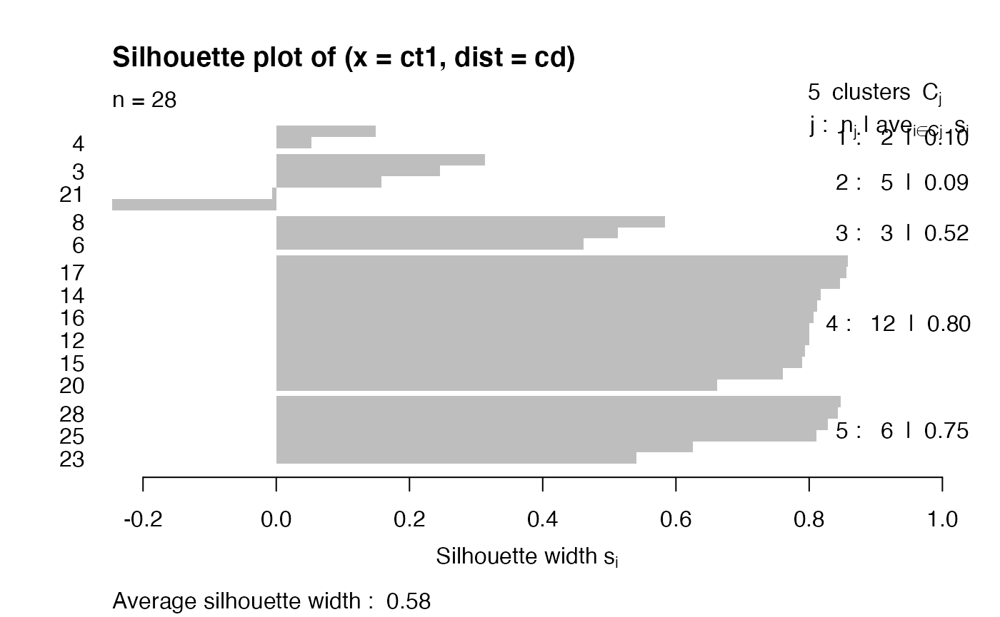

S3: Distances, clustering
Vincent J. Carey, stvjc at channing.harvard.edu
July 04, 2023
Source:vignettes/S3_distclust.Rmd
S3_distclust.RmdRoad map
- Concepts underlying cluster analysis
- Distances in high-dimensional spaces
- Criteria for agglomerative clustering
- Exploring a cluster analysis of copy-number aberration measures in 28 tumors from one patient
- interactive heatmap
- comparing Euclidean and correlation (1-cor) distances
- comparing agglomeration methods
- the silhouette as a measure of clustering adequacy
Cluster analysis concepts
The need to identify groups of similar observations arises in many contexts – ultimately in the service of clarifying sources of variability, building power for statistical comparisons.
Hierarchical clustering of N multivariate observations is conducted by starting with N clusters and proceeding from M clusters to M-1 (M=N, …, 2) clusters by merging the two members separated by the least of all pairwise distances.


Application: inferring steps in tumor metastasis in a breast cancer patient
We’ll examine data distributed with a 2021 Genome Biology paper from the Gabor Marth lab.

Clinical sequence of interventions.

Event sequence.
A view of copy number aberrations for 1Mb tiling
28 tumors were sampled and sequenced in a rapid autopsy procedure. Copy number variation was assessed using FACETS.
The tissues from which tumors were taken are Br (Breast), Bo (Bone), Bn (Brain), Ln (Lung), Lv (Liver), Pa (Pancreas), Ly (Lymph nodes), Kd (Kidney)
The (vertical) ordering of tissues is chosen to exemplify certain similarities.
For example the block of blue on chr10 is seen for only three samples. This is an indication of a deletion.
A cluster analysis proposed in support of the evolutionary map
This code is lightly modified from a script distributed at https://github.com/xiaomengh/tumor-evo-rapid-autopsy.git.
suppressPackageStartupMessages({
library(csamaDist)
library(bioDist)
library(cluster)
})
data(cnv_log_R)
data = cnv_log_R
samples = c('Ln7','Ln9','Ln1','BrM','BrP',
'Ln11','Ly2','Ln3',
'Bo3','Ln10','Bo1','Ln8','Lv3','Ln5','Bo2','Bn2','Bn1','Bn3','Bn4','Ln2',
'Ly1','Ln6',
'Kd1','Ln4','Lv4','Lv2','Lv1','Pa1')
rownames(data) = samples
d = dist(data, method="euclidean")
fit = hclust(d, method="average")
# the following line changes the order of the samples to produce the Fig.S3B but doesn't change the phylogenetic relationship
fit$order = c(1,4,2,5,3,13,10,20,16,11,12,15,9,17,19,14,18,21,22,7,6,8,25,27,26,28,23,24)
plot(fit)Drilling down on the clustering
Comparing Euclidean and Correlation distances
cd = cor.dist(cnv_log_R) # from bioDist
ed = dist(cnv_log_R)
plot(as.numeric(ed), as.numeric(cd), xlab="All pairwise Euclidean distances", ylab="All pairwise correlation distances")For a given correlation distance value, there can be wide variation in euclidean distance, and vice versa.
Open question: What distance metric is most relevant for biological interpretation of CNV?
A pair with discrepant correlation and euclidean distance values (over entire genome)
We’ll have a look at the first 100Mb on chr1.
plot(cnv_log_R["Ly1",1:100],pch=19, main="chr1, first 100Mb", ylab="FACETS CNV log R", xlab="chr1")
points(cnv_log_R["Ln1",1:100], col="red",pch=19)
legend(60, -.5, pch=19, col=c("black", "red"), legend=c("Ly1", "Ln1"))
#cor(cnv_log_R["Ly1", 1:100], cnv_log_R["Ln1", 1:100])
edist = function(x,y) sqrt(sum((x-y)^2))
edist(cnv_log_R["Ly1", 1:100], cnv_log_R["Ln1", 1:100])## [1] 1.685992Silhouette measure
From ?silhouette with the cluster library:
For each observation i, the _silhouette width_ s(i) is defined as follows:
Put a(i) = average dissimilarity between i and all other points of
the cluster to which i belongs (if i is the _only_ observation in
its cluster, s(i) := 0 without further calculations). For all
_other_ clusters C, put d(i,C) = average dissimilarity of i to all
observations of C. The smallest of these d(i,C) is b(i) := \min_C
d(i,C), and can be seen as the dissimilarity between i and its
"neighbor" cluster, i.e., the nearest one to which it does _not_
belong. Finally,
s(i) := ( b(i) - a(i) ) / max( a(i), b(i) ).
'silhouette.default()' is now based on C code donated by Romain
Francois (the R version being still available as
'cluster:::silhouette.default.R').
Observations with a large s(i) (almost 1) are very well clustered,
a small s(i) (around 0) means that the observation lies between
two clusters, and observations with a negative s(i) are probably
placed in the wrong cluster.
ct1 = cutree(fit2, h=.3)
c2 = cnv_log_R
rownames(c2) = paste(rownames(c2), as.numeric(ct1))
sil = silhouette(ct1, cd)
plot(sil)
Exercises
1: install bioDist and vjcitn/csamaDist. Use the code:
library(csamaDist)
data(cnv_log_R)
hc1 = hclust(dist(cnv_log_R[1:8,]))
hc2 = hclust(bioDist::cor.dist(cnv_log_R[1:8,]), method="ward.D2")
opar = par(no.readonly=TRUE)
par(mfrow=c(1,2), mar=c(4,3,1,1))
plot(hc1, main="Euc, complete")
plot(hc2, main="1-Cor, Ward's D2")
par(opar)Comment on the qualitative differences between the clusterings.
2: Here is how to produce a report on silhouette measurement for the second clustering.
assn = cutree(hc2, h=.25)
plot(silhouette( assn, bioDist::cor.dist(cnv_log_R[1:8,])))Produce a three-cluster partition from hc1 and obtain the silhouette display.